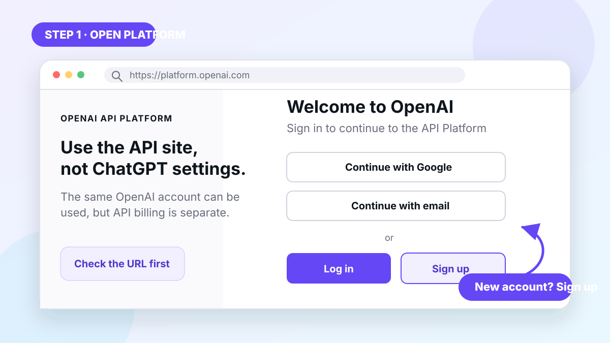
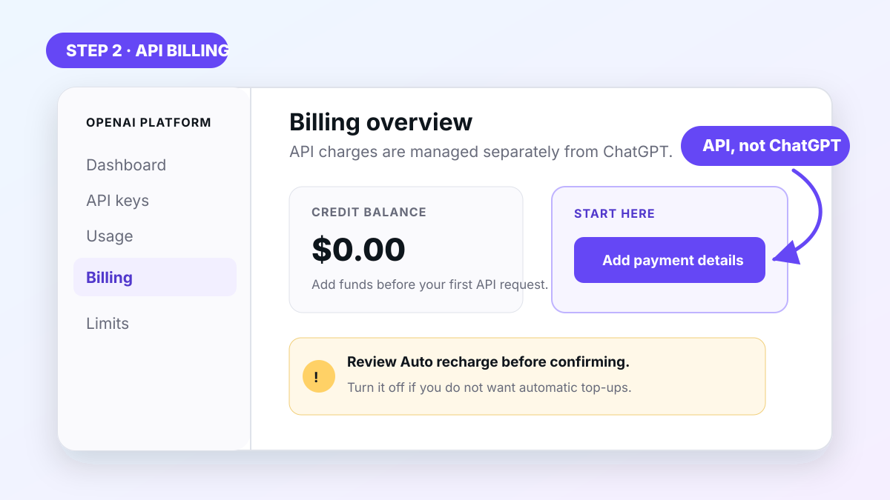
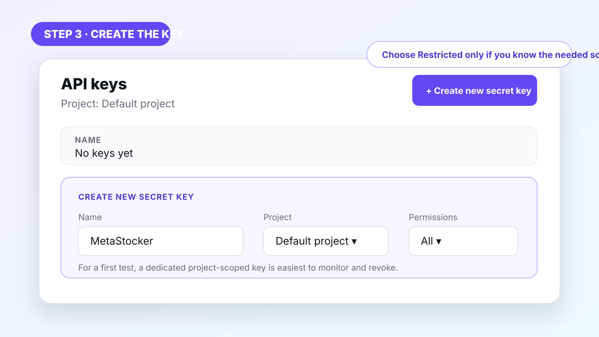
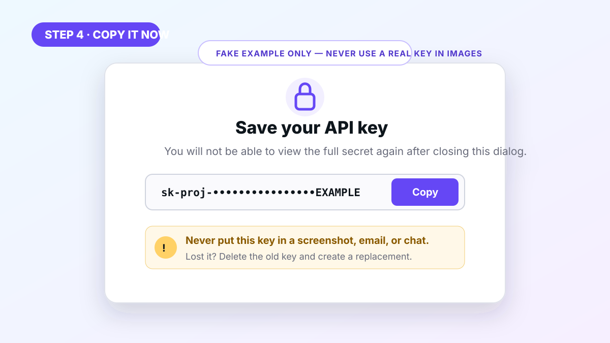
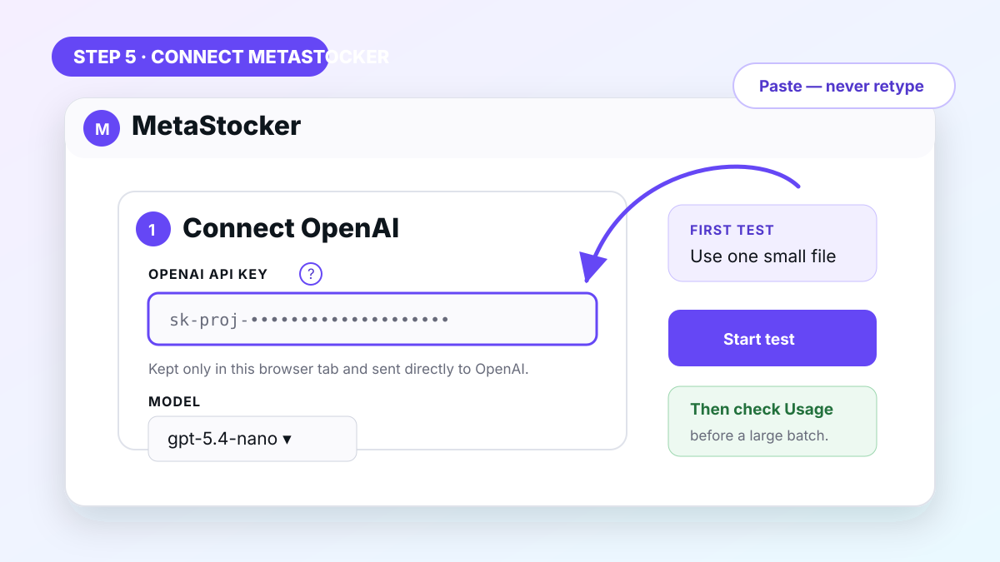

Short version: open the official OpenAI API Platform, add API billing, create a secret key, copy it once, and paste it into MetaStocker. The detailed version below shows every click and the safety settings worth checking first.
It can authorize paid requests on your OpenAI account. Never send it by email or chat, publish it, show it during screen sharing, or include it in a screenshot. MetaStocker support will never need your secret key.
First: what is an OpenAI API key?
An OpenAI API key is a private code that allows MetaStocker to request AI-generated titles and keywords from OpenAI using your API account. It is not your OpenAI password, your ChatGPT password, or a ChatGPT subscription code.
ChatGPT Free, Plus, Pro, Business, and API usage are different products. Paying for ChatGPT does not automatically add API credits. OpenAI confirms this in its official billing explanation.
1Open the official OpenAI API Platform
Use the API Platform—not the normal ChatGPT conversation page. Before entering account details, verify that the address begins with platform.openai.com.
- Select Sign up if this is your first OpenAI account, or Log in if you already have one.
- Continue with email or one of the sign-in providers offered on your screen.
- If OpenAI asks for email or phone verification, complete it and return to the Platform.
- When possible, use a strong unique password and enable multi-factor authentication.

2Activate OpenAI API billing
Most new API accounts need payment details or prepaid credits before the first paid request. Open the API billing page and follow the setup shown for your account.
- Open Billing overview.
- Select Add payment details or Add to balance.
- Start with an amount you are comfortable using for tests.
- Review Auto recharge before confirming. OpenAI currently enables it by default in the prepaid setup flow; turn it off if you do not want automatic top-ups.
- If you keep auto recharge, set a sensible recharge amount, threshold, and monthly recharge limit.
Purchased credits are generally available shortly after payment, but OpenAI notes that account balances can take a little time to update. Purchased credits expire after one year and are non-refundable under the current prepaid billing rules.

3Create a secret API key
Every OpenAI organization includes a Default project. A beginner can use it, but a separate project named “MetaStocker” makes spending and key rotation easier to understand. Creating a separate project is optional and may require organization-owner access.
- Open the direct API keys page.
- Check the selected project near the top of the Platform.
- Select + Create new secret key.
- Name the key MetaStocker so you can identify it later.
- If asked for permissions, the simplest first test is All on a dedicated project. Advanced users can choose Restricted and allow request/write access for Chat Completions. Read Only will not generate metadata.
- Select Create secret key. Your first key may require phone verification, depending on the account and country.

4Copy the key immediately
After creation, OpenAI displays the full secret only once. It usually begins with
sk-proj-, although formats can change.
- Select Copy while the “Save your key” window is still open.
- Paste it directly into MetaStocker or temporarily store it in a trusted password manager.
- Never paste it into Notes shared through the cloud, email, chat, a support message, source code, or a public repository.
- If you close the window before copying, create a new key. The full old secret cannot be revealed again.

5Paste the key into MetaStocker
- Return to MetaStocker and find the Connect OpenAI card.
- Paste the copied secret into OpenAI API key. Do not retype it by hand.
- Choose a GPT model. The economical option is a good place to begin.
- Add one small test image before importing a large batch.
- Select Start and wait for the title and tags.

MetaStocker runs in your browser. It keeps the key in sessionStorage for the current tab
and sends requests directly to OpenAI; there is no MetaStocker backend receiving the key. However,
OpenAI generally recommends keeping API keys on a backend because scripts running in a browser can
potentially access credentials entered there. Use only a MetaStocker copy and device you trust,
avoid untrusted browser extensions, use a dedicated low-budget key, and revoke it immediately if
you think it was exposed.
6Check usage before a large batch
After the first successful file, open OpenAI Usage and confirm the activity looks correct. Then review Limits and create budget alerts. OpenAI’s project monthly budget is a warning threshold, not a guaranteed hard stop, so prepaid balance and regular Usage checks are useful safeguards.
When you finish, remove the value from MetaStocker if you no longer need it in that tab. For a one-time job, consider deleting the API key in OpenAI. If a key may have leaked, deleting and replacing it is the only reliable response.
Troubleshooting common problems
I cannot find “API keys”
You may be on ChatGPT instead of the API Platform. Open the direct API Keys page, sign in, and confirm the correct account and project.
The entire key is no longer visible
This is expected. OpenAI shows the complete secret only when it is created. Delete the old key if it is unused, create a replacement, and copy the new value immediately.
“Invalid API key” or error 401
Remove spaces before or after the value, confirm that the key was not deleted, and check the selected project. If uncertain, create a new key and paste it directly. See OpenAI’s 401 guide.
“Insufficient quota” or billing error
ChatGPT billing does not cover API usage. Check API Billing and Usage, add credits if necessary, and allow a few minutes for the balance to update.
Permission denied or error 403
A Restricted key may not allow the endpoint MetaStocker needs. Edit or recreate the key with request/write permission for Chat Completions, or test an All-permissions key inside a dedicated MetaStocker project.
Rate limit or error 429
Wait briefly and retry. In MetaStocker, reduce Threads to send fewer requests at once. Also check whether your prepaid balance or organization usage limit has been reached.
The key disappeared after I closed the tab
MetaStocker stores the value only for the current tab session. Paste it again from your secure password manager or create a fresh key. This behavior avoids permanent browser storage.
I think my key was exposed
Delete it immediately on the API Keys page, create a replacement, review Usage for unfamiliar activity, and contact OpenAI Support if anything looks wrong.
Frequently asked questions
Do I need ChatGPT Plus?
No. ChatGPT subscriptions and the API are billed independently. You need an API account with available billing or credits.
Is creating the key itself expensive?
Creating a key does not itself generate metadata. Charges come from API usage. Prices vary by model and can change, so use the official pricing page and check Usage after your first file.
Can I use one key everywhere?
Technically a key can make requests wherever its permissions allow, but a separate key per tool or workflow is safer. It is easier to monitor and revoke without interrupting other work.
Can MetaStocker support ask me for the key?
No. Never send your secret to support or anyone claiming they need it. A screenshot of an error should always hide the entire key.
Official OpenAI references
- OpenAI API developer quickstart
- ChatGPT billing versus API billing
- Prepaid API billing setup
- Managing projects and project API keys
- API key permission levels
- Official API key safety guidance
This guide was checked against official OpenAI information on July 18, 2026. OpenAI can change navigation labels and account-specific setup screens.